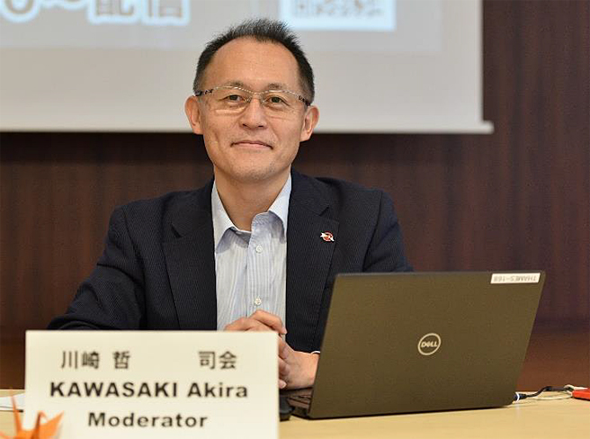
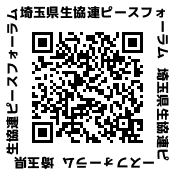

平和の学習会
埼玉県生協連 ピースフォーラム～核兵器をなくすために必要なこと～
2021年1月、核兵器禁止条約が発効しました。三度、核兵器が使用されることがないようにと廃絶を願う被爆者の皆さんの願いが一歩前進しました。そして、核兵器に関わる重要な会議である核兵器禁止条約締約国会議が、2022年3月に開催される予定です。こうした状況の中、核兵器を取り巻く現状の理解を深め、私たちが核兵器をなくすために考えなければいけないこと、できることについて学ぶ学習会を開催します。
- 開催日時：
- 2022年3月3日（木）受付開始10：00 10：30～12：30
- 開催方法：
- 会場参加（埼玉会館3C会議室）・オンライン参加（Zoom）
※新型コロナウイルス感染状況によっては、オンラインのみでの開催に変更する可能性があります。ご承知おきください。 - 講 師：
- 川崎 哲 さん

ピースボート共同代表。2017年にノーベル平和賞を受賞した「核兵器廃絶国際キャンペーン（ICAN）」の国際運営委員（2012～14年同共同代表、14年から現職）。核兵器廃絶日本NGO連絡会の共同代表として、NGO間の連携および政府との対話促進に尽力してきた。ピースボートでは、地球大学プログラムや「ヒバクシャ地球一周証言の航海」をコーディネート。2 009～2010年、日豪両政府主導の「核不拡散・核軍縮に関する国際委員会（ICNND）」でNGOアドバイザーをつとめた。恵泉女学園大学、聖心女子大学などで非常勤講師。日本平和学会理事。著書に『新版核兵器を禁止する』（岩波ブックレット、2018）、『核兵器はなくせる』（岩波ジュニア新書、2018） など。1968年東京生まれ、東京大学法学部卒業
募集
2つの参加方法から、いずれかをお選びください
- A：
- 会場に実参加（定員50人）
- B：
- Zoomでオンライン参加（定員90人）
オンライン参加の皆さんへは、学習会参加に必要な情報（専用URLや参加にあたってのお願いごと）は開催2～3日前をめどに、入力いただいたメールアドレス宛に配信いたします。メールアドレスの入力間違いにご注意ください。
申込締切
2022年3月2日（水）17:00（要申込・先着）
申込方法
専用申込フォーム（下記のURL、二次元バーコードから必要事項をご記入の上、お申込みください。）
https://forms.gle/fFvNsKUCDtfjxPFJ8

- ※いただいた個人情報については、本企画のみでしか使用いたしません。
お願い
通信環境の確認や設定については、各自でのご対応をお願いします。
【主催】
埼玉県生活協同組合連合会
【協力】
埼玉県原爆被害者協議会(しらさぎ会)